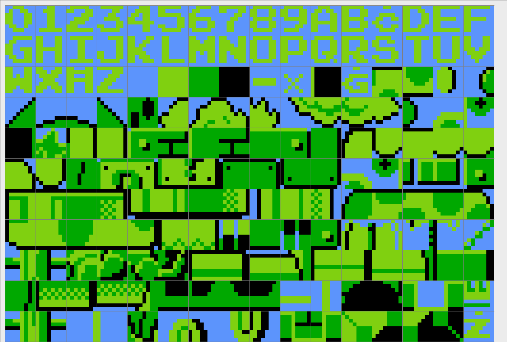
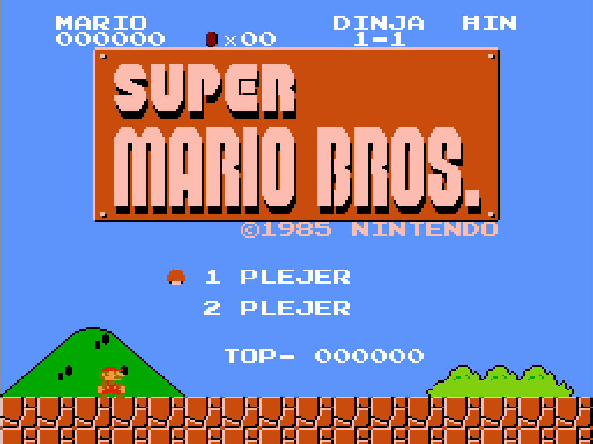
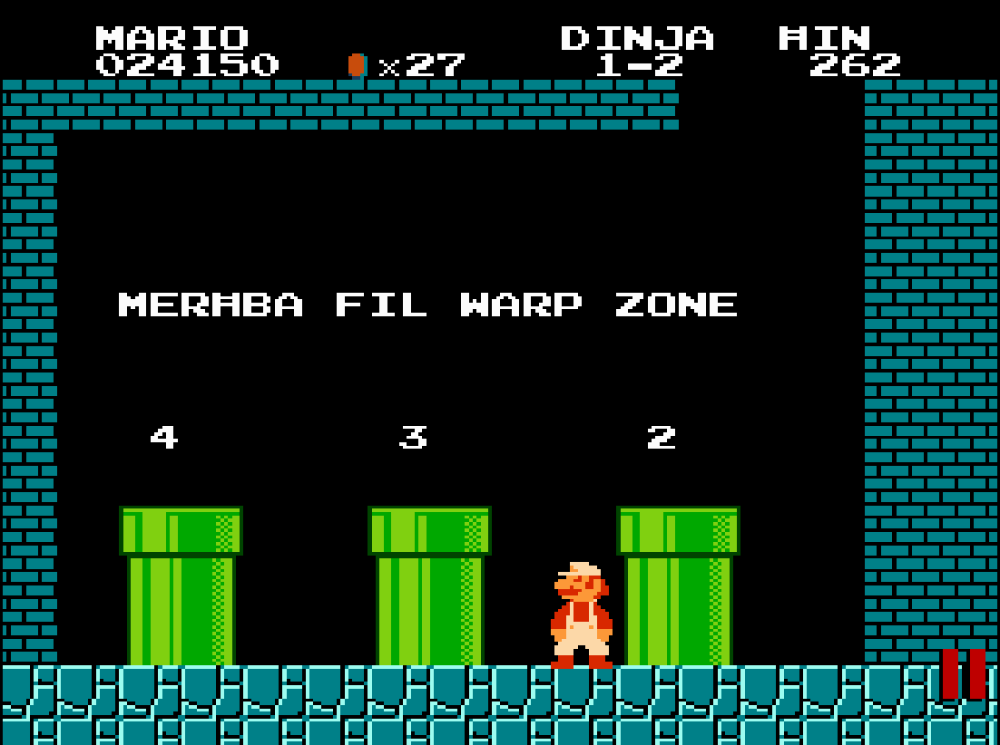
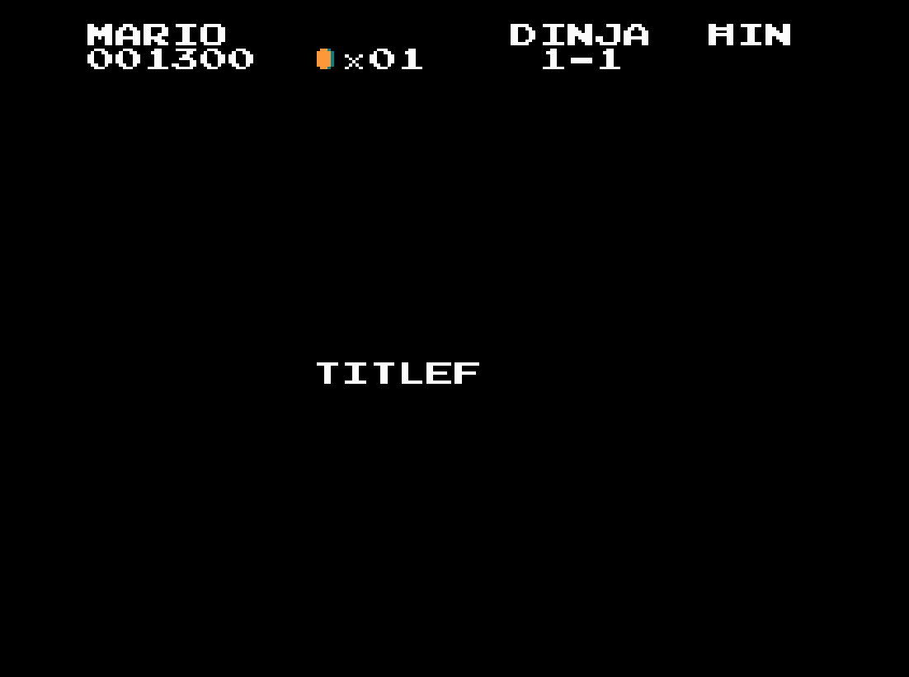
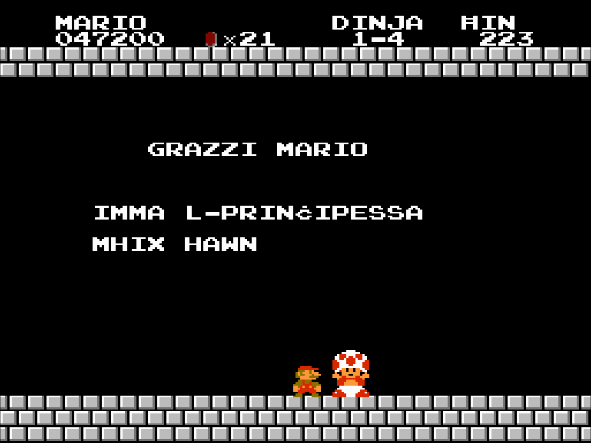
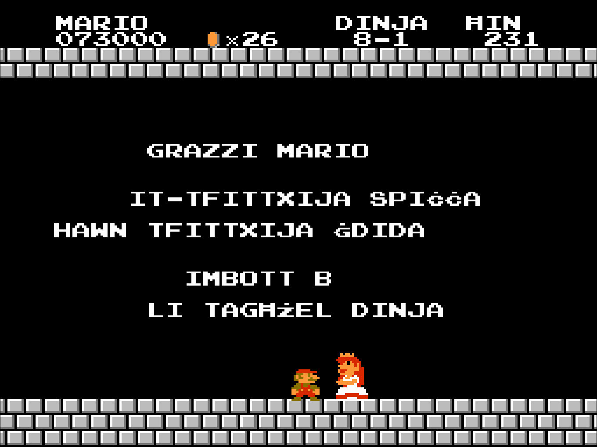
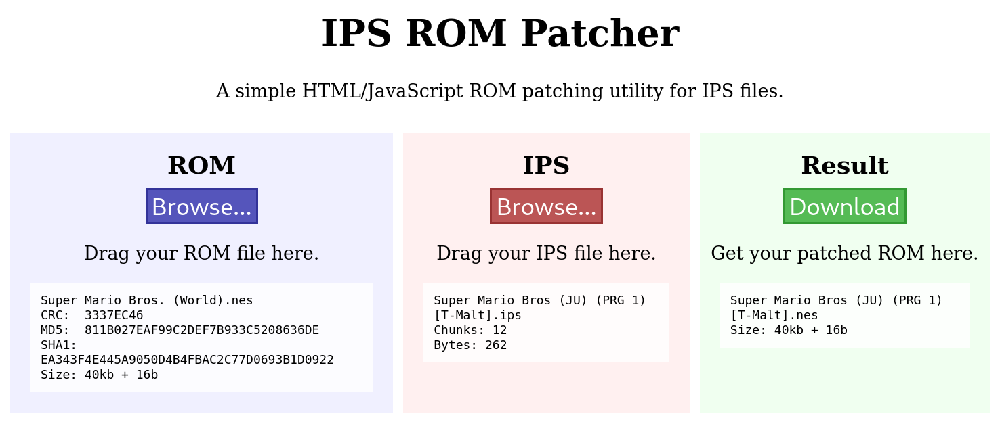

Super Mario Bros - Maltese Translation
Introduction
My friend Zach wrote a Super Mario Bros NES, Maltese translation rom hack.
The rom hack can be download, from the internet archive, in an IPS format.
{kind=link}
This article, will provide screenshots of the rom hack, as well as a short tutorial on how to install it through patching a Super Mario Bros NES rom, and how to play it through an emulator.
NOTE: For legal reasons, I am unable to provide a rom of SMB. You will have to source it on your own.
Screenshots
Here are screenshots of the translations below. I have taken screenshots of all the places in the game, where there is Maltese text. The game isn't very big, so there isn't alot.

The sprite sheet for the game. As you can see, Zach sacrificed certain sprites, to have enough memory to display the full Maltese alphabet.

Title screen.

Warp zones.

Game over.

Princess is in another castle.

End of game screen.
Patching tutorial
Now that I've shown you the game, I'll show you how to patch the game and play it.
There are many tools for patching roms. For this tutorial, we will be using the online: 'IPS ROM Patcher,' that works through a web browser.
There are many emulators that you can use, across a multitude of devices, to play the game. For this tutorial, we will be using FCEUX. It is avaliable on Windows, Mac OSX, and Linux.
- Obtain a Super Mario Bros NES Rom. It has to be the Japan/USA (PRG-1) version and NOT the European/PAL version.
- Download the rom hack from the internet archive. It is in the form of a '.IPS' file
- When you have both files, go to the 'IPS Rom Patcher website.' Insert the rom file, and the IPS file, by either dragging it in, OR browsing for it.
 - When everything is ready and in place, click download.
- Now it is time to play the game. Download the emulator.
- Click on file, open ROM, and select the patched rom file. It should be called 'Super Mario Bros (JU)(PRG 1)[T-Malti].nes' (Unless you renamed it)
- That's it! Have fun, and enjoy the game!